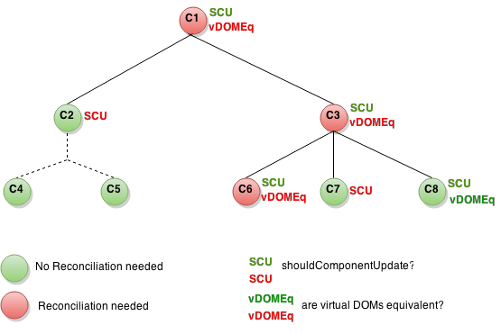

🦉 Code Academy: React
Slack Room
#sf-code-academy-react
Github
https://ewegithub.sb.karmalab.net/anng/sf-code-academy-react
Today: 🔨 React Tooling and Optimizations
React Dev Tools
Webpack bundle analyzer
Production mode
React Component's Lifecycle

props/state updates
props/state updates
check if component should update
props/state updates
check if component should update
if so, call render method
props/state updates
check if component should update
if so, call render method
check if VDOM creates a difference between real DOM
props/state updates
check if component should update
if so, call render method
check if VDOM creates a difference between real DOM
if so, React will update the real DOM for you